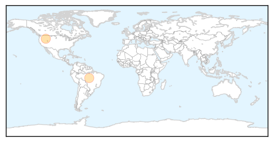
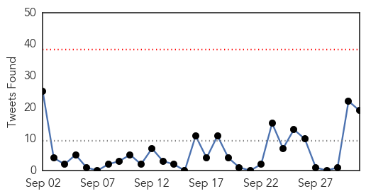
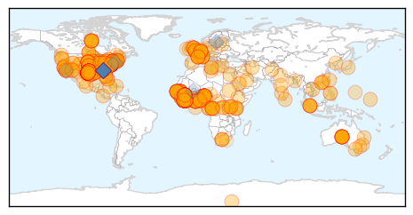

Chikungunya
30-Day Web Trend
0 alerts, 2 warnings

30-Day Twitter Trend
0 alerts, 0 warnings

Article Locations
Article Confidences
Top Articles:
Top Tweets:
-
No tweets found for Oct 01, 2014
Ebola
30-Day Web Trend
1 alerts, 0 warnings
30-Day Twitter Trend
0 alerts, 0 warnings

Article Locations
Article Confidences
Top Articles:
- 1.000
- Ebola patient sent home from ER
- 1.000
- Texas Ebola patient update: Man had contact with children, Texas Governor Rick Perry says
- 1.000
- Dallas hospital diagnoses first patient with Ebola
- 1.000
- First U.S. case of Ebola diagnosed in Texas after man who came from Liberia falls ill
- 1.000
- The 6 biggest myths about Ebola, debunked
- 1.000
- Why America's health care system can stop Ebola, even though other countries couldn't
- 1.000
- Can Ebola Virus hit Pakistan? How to prevent yourself?
- 1.000
- 10 Things to Know About Ebola
- 1.000
- Health officials see low risk of Ebola on flights
- 1.000
- Health officials see low risk of Ebola on flights
- 1.000
- Ebola patient told hospital he had been to Liberia
- 1.000
- Ebola: United States diagnose its first case (VIDEO)
- 1.000
- Canada’s Ebola risk ‘very low,’ officials say after U.S. reports case
- 1.000
- Canada’s Ebola risk ‘very low,’ officials say after U.S. reports case
- 1.000
- Ebola patient told hospital he had been to Liberia
- 1.000
- Ebola rears ugly head in America -
- 1.000
- Local hospitals on alert for Ebola symptoms
- 1.000
- Ebola in the US: Children exposed to Ebola patient who was seen vomiting in street before hospital admission
- 1.000
- Ebola outbreaks in Nigeria, Senegal, appear contained: CDC reports
- 1.000
- Dallas hospital diagnoses first patient with Ebola
- 1.000
- What you need to know now
- 1.000
- Could an Africa-sized Ebola outbreak happen in U.S.? Officials say no
- 1.000
- Patient tests positive for Ebola in Dallas
- 1.000
- Traveler from Liberia is first Ebola patient diagnosed in U.S.
- 1.000
- Health officials see low risk of Ebola on flights
- 1.000
- Ebola in US: 'There is no reason to panic about the disease spreading,' expert says
- 1.000
- Ebola virus US: What is it, what are the symptoms, and is there a cure?
- 1.000
- Ebola virus: Efforts to fight virus ‘being let down by cuts to direct aid’
- 1.000
- US Ebola case is first diagnosed outside Africa
- 1.000
- Direct From US-CDC: First Confirmed Case of Ebola Virus in US; Dallas, TX at 8PM on Tuesday, September 30, 2014
- 1.000
- Timeline of world's worst Ebola outbreak
- 1.000
- Ebola’s arrival in U.S. was inevitable, experts say
- 1.000
- Dallas Ebola Patient Has Died
- 1.000
- Did US Ebola victim change flights at Heathrow?
- 1.000
- Did US Ebola victim change flights at Heathrow?
- 1.000
- Ebola outbreaks in Nigeria, Senegal, appear contained CDC reports
- 1.000
- First Ebola case diagnosed in U.S.
- 1.000
- Ebola virus diagnosed in the U.S.: What you need to know about the disease and outbreak
- 1.000
- Ebola in Northeast Ohio? Unlikely, area physicians say, but hospitals prepared just in case
- 1.000
- Ebola in North America: Why you shouldn't panic
- 1.000
- Triple virus whammy in the US: Ebola, Enterovirus 68, Chikungunya spreads
- 1.000
- Ebola in the US: Children exposed to Ebola patient who was seen vomiting in street before hospital admission
- 1.000
- Dallas patient is first Ebola case diagnosed in U.S.
- 1.000
- What you need to know about the Ebola outbreak
- 1.000
- Officials Contact More People in Relation to U.S. Ebola Patient But Reassure Public on Containment
- 1.000
- Dallas Patient Has Tested Positive For Ebola, CDC Confirms
- 1.000
- Health officials monitoring kids who had contact with Ebola patient > KAGS TV
- 1.000
- Ebola Patient In Texas Identified, Came In Contact With School Kids In Dallas
- 1.000
- – Ebola Strikes United States
- 1.000
- US: Ebola cases could hit 1.4 million by mid-Jan.
Showing top 50 articles...
Top Tweets:
- 0.953
- RT: US patient did not have symptoms of Ebola during flights from Africa. Ebola is only contagious after symptoms begin. htt…
- 0.944
- Any US hospital following CDC's infection control recommendations can safely manage a patient w/ Ebola.
- 0.867
- RT: Two diff. between US Ebola case & those in W. Africa: We have infection control & thorough public health practices in th…
- 0.827
- US has had international travelers who got deadly viruses similar to Ebola and none spread the disease to others here.
- 0.821
- Two diff. between US Ebola case & those in W. Africa: We have infection control & thorough public health practices in the US.
- 0.802
- RT: US has had international travelers who got deadly viruses similar to Ebola and none spread the disease to others here.
- 0.802
- CDC is helping authorities in Ebola-affected countries to screen travelers boarding flights for illness or exposure to Ebola.
- 0.780
- The impulse to isolate countries may make Ebola epidemic worse. Must use tried & true public health means to stop it.
- 0.779
- US patient did not have symptoms of Ebola during flights from Africa. Ebola is only contagious after symptoms begin. http://t.co/qgfblxQcGY
- 0.768
- RT: US has a strong health care system & dedicated public health professionals to ensure TX Ebola case can be limited. http:…
- 0.766
- SierraLeone Ebola 1 Oct: 24new cases F/Town = 12 W/Area R 4 Bo 4 Moyamba 2 Kenema 1 P/Loko 1. Total = 2184. Confirmed deaths = 550.
- 0.735
- CDC & @WHO do not recommend stopping travel between countries with Ebola outbreaks & other countries.
- 0.686
- The big picture is that the U.S. Ebola case is a reflection of the epidemic in W. Africa. We’ll stop it here.
- 0.636
- Anyone with recent travel to countries with Ebola outbreaks should monitor their symptoms for 21 days.
- 0.620
- ReplaceMovieTitleWithEbola is trending. This is no joke. Ebola is a VERY serious disease. Thousands of people are currently suffering.
- 0.617
- RT: America has the best doctors and public health infrastructure in the world and we are prepared to respond to Ebola: http:…
- 0.578
- CDC guidance on monitoring & movement outlines public health actions for people who have been exposed to Ebola: http://t.co/9CZHCdAyrI
- 0.554
- With first case of Ebola in US confirmed CDC tracing those who came in contact in order to contain virus. http://t.co/sZjl1IVsyt
- 0.517
- According to CDC health workers in Liberia ostracized due to suspicion and fear of Ebola. http://t.co/sSKNlMHFn8